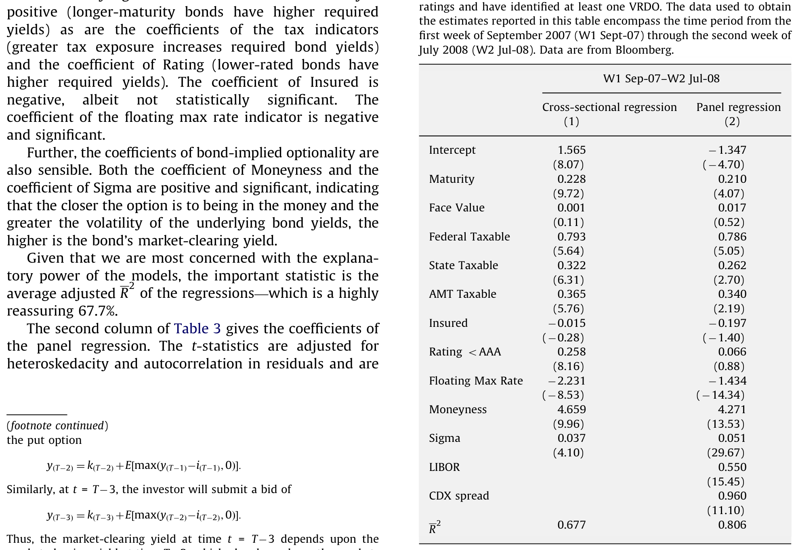
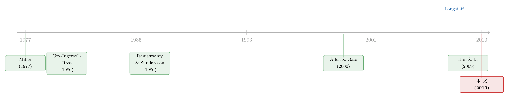

「冻住」的市场，还是算清楚账的投资者？——重读拍卖利率证券的崩塌
本文读的是 McConnell & Saretto (2010, JFE)：2008 年初拍卖利率证券（ARS）市场的「拍卖失败」潮，被媒体说成是市场「冻结」、投资者「非理性」逃离。但作者用 793 只债券的逐周拍卖数据指出——失败的概率系统性地取决于债券合约里那条不起眼的「最高拍卖利率」上限：当投资者要求的市场利率高过这条上限时，他们理性地选择不出价，于是拍卖「失败」。所谓的「非理性逃离」，其实是一群算清楚了账的人。
1 一个被头条写错了的故事
先把时间拨回 2008 年 2 月的第二周。
那一周，华尔街最热的词是「frozen」。一个叫 拍卖利率证券（auction rate securities, ARS）的角落突然集体「锁死」：持有人想卖却卖不掉，几百亿美元的资金一夜之间动弹不得。媒体几乎是异口同声地给出了诊断——这是信贷危机「进一步迈入非理性领域」的又一个牺牲品，投资者「抛弃」了这个市场，他们「无论什么价格都不愿出价」。《华尔街日报》《纽约时报》《道琼斯》轮番上阵，标题一个比一个惊悚：「Auctions fail on fear of fear itself」。
如果你只读头条，结论很简单：一群被恐惧攫住的投资者，集体丧失了理智。
但本文的两位作者 McConnell 和 Saretto 偏偏不信这套叙事。他们提出了一个朴素得近乎挑衅的反问：如果失败的拍卖根本不是「随机」分布的，而是精准地落在某一类债券上呢？ 如果是，那「非理性」就解释不了什么了——非理性的恐慌应该是无差别的，而一个有结构的失败模式，背后一定站着某种理性的算计。
这就是全文要反复讲透的那个核心：ARS 拍卖失败，不是市场冻结，而是投资者在合约约束下的最优选择。
2 先把 ARS 这套机制讲明白
要理解这一点，得先弄懂 ARS 这个有点反直觉的产品。
ARS 是一种长期浮动利率债券（多由政府相关机构发行，常带免税身份，俗称「munis」），但它的利率不是市场连续报出来的，而是每隔一段时间（常见的是 7 天、28 天、35 天）通过一场公开拍卖重置一次。关键的一条约束是：这些证券必须按面值（par）成交。
既然价格被钉死在面值，买家能竞的就只剩下「利率」。每场拍卖里，潜在买家提交一对数字——愿意买多少（按面值）、以及要求的利率。拍卖代理人把所有出价从低到高排队，找出那个能让累计需求量正好等于在外发行量的最低利率，这就是「市场出清利率」（market-clearing yield）。所有持有人都按这个利率拿到下一期的票息。
听起来像一台普通的荷兰式拍卖机器。但这台机器装了一个限位器：最高拍卖利率（maximum auction rate，常简称 max rate）。
这条上限是写进债券契约里的硬约束：拍卖代理人在出清市场时，不允许让利率超过 max rate。一旦在 max rate 以下凑不齐足够的买盘，拍卖就被判定为「失败」（failed auction）。
注意这里的微妙之处。在普通市场里，卖不掉只要降价（升息）就行；但 ARS 的「价格」被钉死在面值，唯一的调节阀就是利率，而利率又被 max rate 卡住了。所以一旦市场要求的利率高于 max rate，这台机器就没有任何出清的余地——它只能失败。
失败之后会怎样？现有持有人继续持有这只债券，拿到的就是那个 max rate（一个低于市场的利率），而且要一直被「困住」（stuck），直到下一场成功的拍卖为止——如果后面的拍卖也失败，那就遥遥无期。
作者用一个极漂亮的比喻点破了这层关系：ARS 的持有人，本质上等于向发行人卖出了一份看跌期权（put option）——发行人有权在每个拍卖日把债券按面值「put」给投资者，只要拍卖出清失败。你拿着的不是一只普通债券，而是一只「债券减去一份你卖出的 put」。
3 真正关键的一步：用 max rate 把「失败」预测出来
铺垫到这里，本文的识别逻辑就水到渠成了。
首先，作者把一个最容易被头条掩盖的事实摆上台面：即便在最高峰，也不是所有拍卖都失败了。在他们分析的 793 只 ARS 样本里，峰值时整体失败率也只有 46%；放到更长的口径，2008 年上半年甚至「不到一半」的 ARS 经历过失败。一个真正「冻结」的市场不该是这样——这第一锤就敲在了「frozen」叙事的裂缝上。
接着，一个自然的问题是：既然有的失败、有的没失败，那是什么把它们区分开的？作者的猜想直指 max rate 的水平：max rate 越低，留给「市场利率 ≤ max rate」的空间越窄，拍卖就越容易失败。于是他们检验这样一个零假设——失败与 max rate 无关——并准备把它推翻。
第一项检验是一个 逻辑斯蒂回归（logistic regression）。把「某场拍卖是否失败」作为被解释变量，用 max rate 的水平等债券特征去解释它：
$$ \Pr(\text{fail}_{it}=1) = \frac{1}{1 + \exp\!\big[-(\alpha + \beta\, \text{MaxRate}_{it} + \gamma' X_{it})\big]} $$
结果干净利落：失败概率与 max rate 的水平负相关且显著——max rate 越低，失败概率越高。如表 2 所示，各个变量的系数都给出了「有经济意义」的符号。

Table 2: The coefficients of the variables have sensible
然后，作者找到了一个绝妙的「自然分割」。原来 max rate 有两种写法：固定（fixed） 和 浮动（floating）。固定的就是一个写死的数（样本里从 9% 一直到 25% 不等）；浮动的则挂钩某个参考利率（一个月 LIBOR、SIFMA 市政互换指数等），写成「参考利率 × 乘数」或「参考利率 + 利差」的形式（乘数从 125% 到 500%，利差从 1% 到 3.5%）。关键在于：浮动 max rate 的水平通常远低于固定 max rate。 于是「固定 vs 浮动」就成了「max rate 高 vs 低」的一个干净代理。
预测随之而来：浮动 max rate 的债券应该败得更惨。数据给出的答案近乎戏剧性——
在 2008 年 2 月那动荡的第二周，样本整体失败率从 18% 跳到 41%；但拆开看：浮动 max rate 债券的失败率高达 93%，而固定 max rate 债券只有 13.4%。同样的市场、同样的一周、同样的「恐慌」，结局却被合约里那条上限劈成了两半。
但真正关键的一步在于第三项检验。前两项说的是「失败的债券 max rate 更低」，可这还不足以证明投资者是「理性退出」——也许他们只是凑巧不喜欢浮动债券。作者要的是更硬的证据：对于那些失败的拍卖，市场到底想要多高的利率？ 他们用成功拍卖的债券估了一组横截面与面板回归，把市场出清利率建模成债券特征和市场变量的函数，再用这个模型去反推失败债券「本该」出清的隐含利率。
结论一锤定音：失败债券的隐含市场出清利率，显著高于它们的 max rate。换句话说，市场愿意持有这些债券的利率，本就在那条上限之上——既然契约不允许利率涨到那里，理性的投资者当然选择不出价。那些「消失」的市场参与者，不是逃跑的恐慌者，而是算清楚了「这只债现在给的是低于市场的回报」之后，平静地决定不接盘的人。
于是反转完成了：把「非理性逃离」翻译成数据，它读出来的是「理性弃标」。
4 那么，投资者「被骗」了吗？——ARS 与现金等价物之争
故事到这里本可以收尾，但作者顺势接住了拍卖失败之后掀起的两场官司与质询，把它们也变成了可检验的问题。
第一场质询的核心指控是：ARS 被当成「现金等价物」（cash equivalent）卖给了投资者，结果却把人困住了。要回应这个指控，得问一句：ARS 的收益，到底有没有为「可能被困住」这件事付过钱？
作者分两步比。第一步是和真正的现金等价物比——货币市场基金（MMF）、国库券（T-bills）、大额存单（CDs）。在 2003 年 1 月到 2008 年 1 月中旬这段「太平日子」里，ARS 的平均年化回报只比 MMF 高 26 个基点；但从 2007 年 9 月（样本里第一次拍卖失败）到 2008 年 1 月第二周，ARS 对 MMF 的利差扩大到了约 48 个基点。收益在涨，而涨的时点恰好是失败风险冒头的时候。
第二步更见功力——和 可变利率需求债券（variable-rate demand obligations, VRDO）比。VRDO 和 ARS 几乎是一对孪生兄弟：都是长期债、都按面值在重置日成交。唯一的、也是致命的区别在出清机制上：VRDO 的投资者在每个重置日有权把债券按面值「卖回」给再营销代理人；而 ARS 的投资者一旦拍卖失败就被困住。用前面那个期权的语言说——VRDO 投资者手里攥着一份 put，而 ARS 投资者是卖出了一份 put。
所以把 ARS 收益减去 VRDO 收益，剩下的那部分，正是市场为这份「嵌入式 put」标的价。结果很清楚：在 2007 年 9 月之前，控制了债券特征之后，ARS 收益并不高于 VRDO——市场那时根本没把「被困住」当回事（也合理，从 1985 年第一只 ARS 问世到 2007 年 9 月，失败几乎闻所未闻：据 Moody's，1984 到 2006 年间十万多场拍卖里总共只失败过 13 次）。但从 2007 年 9 月起，ARS 相对 VRDO 的利差开始张口，到 2007 年底已经拉到了 99 个基点，进入 2008 年 1 月还在继续走阔。
这条证据最优雅的地方在于：它说明 ARS 不是被当作「永不失败的现金等价物」来定价的。一旦失败的可能性在 2007 年秋天变得真切，那份卖出的 put 立刻就被市场重新标了价。投资者也许在购买时被销售话术误导过（这一点数据无法回答），但市场显然没有把它当成现金。
5 是次贷「传染」过来的吗？
第二个被作者顺手解决的问题，是 2008 年上半年 ARS 收益的整体抬升——它到底是从次贷市场「外溢/传染」（spillover / contagion）过来的，还是反映了一种更宽泛的信用风险担忧？
这里作者借用了 Longstaff (2008b) 的框架，做时间序列回归：用次贷资产支持指数（ABX）价格的变化、和信用违约互换指数（CDX）利差的变化，去预测 ARS 收益的变化。两个解释变量，讲的是两个不同的故事——ABX 代表「次贷专属的麻烦」，CDX 代表「整个信用市场的担忧」。
结果是一组漂亮的「错位」：在 2007 年，ABX 指数对 ARS 收益有预测力；但到了 2008 年上半年、也就是拍卖真正大面积失败的时候，ABX 反而失去了预测力。CDX 恰好相反：2007 年没有预测力，2008 年却有了。
这个反转的含义很直接：ARS 的崩塌不像是次贷资产支持市场传染过来的（否则 ABX 该在 2008 年更有解释力才对），而更像是 2008 年那场对整体信用风险的广泛担忧的产物。「次贷传染」这个顺手的标签，又一次没能扛住数据。
6 文献脉络
把这篇论文放回它的坐标系，会发现它其实站在三条河流的交汇处。
第一条是市政债券（municipal bonds）的发行与定价文献。从 Miller (1977) 的「债与税」之问出发，经 Trzcinka (1982) 对 Miller 假说的检验、Benson, Kidwell, Koch & Rogowski (1981) 对免税债收益率系统性差异的刻画，一路到 Chalmers (1998)、Downing & Zhang (2004)、Green, Hollifield & Schurhoff (2007) 对市政债流动性与交易商中介的研究。ARS 本质上是带拍卖机制的 munis，这条脉络是它的「母体」。
第二条是浮动利率证券与利率上限（caps）的定价文献——Cox, Ingersoll & Ross (1980)、Ramaswamy & Sundaresan (1986)、McConnell & Singh (1991) 对浮动利率工具与上限的估值，给「max rate 是一份 put」这个洞见提供了理论土壤。
第三条是金融传染（contagion）文献：从 James (1987)、Lang & Stulz (1992) 的同业溢出，到 Allen & Gale (2000)、Kyle & Xiong (2001) 的理论模型，再到 Brunnermeier & Pedersen (2009) 把市场流动性与融资流动性绑在一起。本文用 Longstaff (2008b) 的框架，正是为了和这条脉络对话——并给出一个「不是次贷传染」的反例。

而最贴身的一篇，是几乎同期的 Han & Li (2009)。他们考察 2007 年中到 2008 年初的 ARS 市场，得到了和本文一致的核心发现：失败的发生率与 max rate 负相关、浮动利率债券更易失败。两篇论文像是从不同入口走进同一座房间——本文的独到之处，在于把「投资者理性弃标」这一行为含义，连同 put 期权定价、以及「非传染」的证据，一并串成了一条完整的因果叙事。
（关于危机里公司债流动性「假冻结」的微观解剖，可参见《差点死掉的那个市场：一场公司债流动性危机的微观解剖》；关于「火线甩卖」的幻觉如何被同发行人债券戳破，可参见《同一个发行人的两只债券，戳破了「火线甩卖」的幻觉》。）
7 评论与延伸（Q&A + 研究方向）
(a) 几个可能的疑问
Q：「拍卖失败」和「市场冻结/流动性枯竭」到底是不是一回事？
不是，这正是本文的题眼。流动性枯竭意味着「任何价格都无人接盘」；而 ARS 的失败是一种机械的、合约触发的结果——市场其实愿意接盘，只是要求的利率高过了 max rate 这条契约上限，于是出清在制度上被禁止了。失败不等于没有需求，而是「在被允许的利率区间里」没有足够需求。
Q：用「固定 vs 浮动」来代理 max rate 高低，会不会偷换了概念？
这是合理的担忧。浮动债券可能在信用质量、发行人类型上系统性地不同。所以作者没有止步于此分组对比，而是补了 logit 回归直接放入 max rate 的水平、并控制其他特征——分组只是叙事上最直观的「自然分割」，识别的重担落在连续变量回归和「失败债券隐含利率 > max rate」那一步上。
Q：把 ARS 持有人说成「卖出了一份 put」，这个类比靠谱吗？
相当贴切。拍卖失败时，发行人事实上获得了「按面值把债券留给投资者、只付 max rate」的权利，这与发行人持有一份对投资者的看跌期权在现金流上同构。和 VRDO 一比就更清楚了：VRDO 投资者买入了 put（可按面值卖回），所以 ARS 与 VRDO 的收益差，恰好量出了这份 put 的价格——99 个基点不是凭空来的。
Q：失败债券的「隐含市场利率」是用成功债券估的模型外推出来的，会不会有样本选择问题？
会，这是本文识别上最该警惕的一处。用成功拍卖的样本估计利率模型，再外推到失败样本，隐含假设是「两类债券的定价关系一致」。如果失败本身与某些未观测特征相关（比如更差的隐含信用），外推就可能高估失败债券的「应得利率」。不过这个偏误的方向恰好有利于作者的结论（隐含利率被高估 → 更容易超过 max rate），所以它更像是一个保守的、而非致命的担忧。
Q：既然失败这么容易预测，为什么 2008 年之前几乎从不失败？
因为在太平年月里，市场要求的利率远低于任何 max rate，那条上限根本不构成约束——十万多场拍卖只失败 13 次。max rate 一直在那里，但只有当 2007 年秋天信用利差整体抬升、把「市场要求利率」顶到上限附近时，这条休眠的契约条款才突然「咬人」。这也解释了为什么 put 期权的定价是从 2007 年 9 月才开始显现的。
Q：这对今天的「安全资产」设计有什么启示？
核心教训是：把一只长期信用债包装成「类现金」，靠的是一个隐含假设——重置机制永不卡壳。一旦利率上限这类「平时看不见」的条款在压力下变成硬约束，所谓的流动性就会瞬间蒸发。任何依赖「滚动重置 + 价格锚定」的工具（货币基金、某些结构化产品）都共享这个脆弱性。
(b) 几个可能的研究问题与提案
1. 把「合约上限」搬到公司债的浮动利率与可回售条款上
【经济故事】ARS 的教训是一条休眠的合约条款（max rate）在压力下决定了流动性的生死。公司债里也有大量类似的「状态依赖」条款——回售权（put/poison put）、利率重置上下限、评级触发的 step-up。这些条款平时不绑定，危机里却可能集体激活，制造出「机械式」的抛售或冻结。
【可行性】中。Mergent FISD 有较完整的条款字段，TRACE 提供成交价与流动性度量。识别上可借鉴本文思路：在压力期比较「条款绑定 vs 未绑定」债券的流动性骤变，用条款阈值附近做断点。难点是条款异质性大、绑定时点难精确界定。
2. 外资持有人是不是「理性弃标」的边际玩家？
【经济故事】本文把失败归因于投资者理性退出，但没有刻画「谁先退」。在公司债/munis 里，不同持有人（外资、保险、共同基金）面对的约束与信息不同，谁先在上限附近停止出价，决定了冻结的速度与传染路径。
【可行性】中偏低。ARS 持有人数据极难获得；但可在公司债上用 eMAXX/Lipper 持仓数据，结合危机期成交方向，识别哪类持有人在利差冲高时率先撤出。识别策略偏描述性，因果较弱。
3. 用 ARS 崩塌做一次「流动性供给者退出」的清洁实验
【经济故事】ARS 历史上靠承销商「兜底出价」维持了表面流动性，2008 年初这些银行集体撤出兜底，正是失败爆发的导火索之一。这给「做市商/流动性供给者退出」提供了一个时点相对清晰的冲击。
【可行性】高（若能拿到逐场拍卖与承销商兜底数据）。可用事件研究法，比较各承销商撤出兜底的时点差异（交错冲击），考察发行人后续的再融资成本与替代融资（转 VRDO、转银行贷款）。与《公司债大宗交易里被遗忘的「接盘人」》的思路可互相映照。
4. 「合约上限」作为系统性风险的隐藏放大器
【经济故事】当大量证券共享同一个参考利率（如一个月 LIBOR）作为 max rate 锚，参考利率的一次跳变会同时让一大批债券的上限绑定，制造出相关性极高的「同时失败」。这是一种被合约结构内生出来的系统性风险。
【可行性】中。可用 ARS 样本或更广的浮动利率市政债，构造「共享参考利率敞口」度量，检验它能否预测危机期失败的聚集程度。识别清晰，但数据覆盖是瓶颈。
8 我的判断
这篇论文最让人佩服的，是它用一套朴素到几乎「无聊」的实证设计，干净地推翻了一个被媒体和诉讼喂养得很肥的叙事。它的贡献不在于发明了新方法，而在于找对了那个被所有人忽略的合约变量——max rate——并围绕它把「失败的横截面分布」「put 期权的定价」「非次贷传染」三件事串成了一条自洽的因果链。三条证据彼此独立又彼此印证，这种「多角度收口」是好实证论文的标志。
要说担忧，最实的一处仍是第三项检验的外推：用成功样本估利率模型再套到失败样本上，本质上是一个选择性样本下的反事实推断。作者也坦承拿不到个体投资者层面的数据，因而无法直接回答「投资者是否被销售误导」这个最有政策含义的问题——他们只能从市场定价反推「市场没把它当现金」，这是一种聪明但间接的论证。
我接下来最想看到的，是把「持有人身份」补进这个故事：在上限被顶到临界点的那几周里，到底是谁第一个停止出价、谁被困在了里面？理性弃标是一个总量结论，而流动性危机的真正肌理，往往藏在「边际玩家是谁」这个微观问题里。把外资、保险、基金这些异质持有人放进 ARS（或它在公司债里的近亲）这台机器，也许能让「合约上限如何制造系统性脆弱」这条暗线，从一个总量故事变成一张可追踪的因果地图。
参考文献
- Allen, F., & Gale, D. (2000). Financial contagion. Journal of Political Economy 108(1), 1–33.
- Benson, E., Kidwell, D., Koch, T., & Rogowski, R. (1981). Systematic variation in yield spreads for tax-exempt general obligation bonds. Journal of Financial and Quantitative Analysis 16, 685–702.
- Brunnermeier, M. K., & Pedersen, L. H. (2009). Market liquidity and funding liquidity. Review of Financial Studies 22, 2201–2238.
- Chalmers, J. M. (1998). Default risk cannot explain the muni puzzle: Evidence from municipal bonds that are secured by U.S. Treasury obligations. Review of Financial Studies 11, 281–308.
- Cox, J., Ingersoll, J., & Ross, S. (1980). An analysis of variable rate loan contracts. Journal of Finance 35, 389–403.
- Han, S., & Li, D. (2009). Liquidity crisis, runs, and security design — Lessons from the collapse of the auction rate securities market. Federal Reserve Board Working Paper.
- James, C. (1987). Some evidence on the uniqueness of bank loans. Journal of Financial Economics 19, 217–235.
- Lang, L. H. P., & Stulz, R. M. (1992). Contagion and competitive intra-industry effects of bankruptcy announcements: An empirical analysis. Journal of Financial Economics 32, 45–60.
- Longstaff, F. A. (2008b). The subprime credit crisis and contagion in financial markets. Working paper, UCLA.
- McConnell, J. J., & Saretto, A. (2010). Auction failures and the market for auction rate securities. Journal of Financial Economics 97(3), 451–469.
- McConnell, J., & Singh, M. (1991). Prepayments and the valuation of adjustable rate mortgage-backed securities. Journal of Fixed Income 1, 21–35.
- Miller, M. (1977). Debt and taxes. Journal of Finance 32, 261–275.
- Ramaswamy, K., & Sundaresan, S. (1986). The valuation of floating-rate instruments: Theory and evidence. Journal of Financial Economics 17, 251–272.
- Trzcinka, C. (1982). The pricing of tax-exempt bonds and the Miller hypothesis. Journal of Finance 37, 907–923.